| Chapter | Page |
|---|---|
| 1. Steam Generator Components and Design | 1 |
| 2. Specialized Boiler Designs | 63 |
| 3. Steam Generator Operation | 123 |
| 4. Boiler Maintenance and Inspection | 149 |
| 5. Pumps | 185 |
| 6. Water Chemistry and Analysis | 233 |
| 7. Water Pre-Treatment I | 273 |
| 8. Water Pre-Treatment II | 311 |
| 9. Internal Water Treatment | 357 |
| 10. Non-Boiler Water Treatment | 403 |
| End of Chapter Question Solutions | 441 |
When you complete this learning material, you will be able to:
Discuss the components and design of a steam generator.
You will specifically be able to complete the following tasks:
Explain how the ratings of boilers and steam generators are calculated.
The oldest measure of steam-generator capacity is boiler horsepower . This is the amount of steam, which was required to generate one horsepower in a typical steam engine at the date when the unit was adopted. In the SI System one boiler horsepower is equivalent to 9.809 kW. It is still used as the common measure of capacity for small boilers.
Larger boiler capacity is almost invariably given in the number of kg of steam evaporated per hour, with specified steam conditions.
A steam generating unit coordinates many elements. While the term boiler is broadly used, it should apply, strictly speaking, only to the elements in which the change of state from water to steam takes place. The term steam generator embraces the many combinations of heating surfaces, such as water walls, superheaters, reheaters, economizers, and air heaters. A steam generating unit consists of a steam generator and its associated equipment, including fuel burning, ash removal, and draft systems. Performance of the total unit is affected by the limitations of the systems components, such as draft, or fuel-burning equipment.
Manufacturers may rate their boilers according to the area of the heating surface they contain. As all heating surfaces are not equally efficient in transferring heat, due to arrangement and circulation, it is obvious that this method will not produce reliable results. One boiler with 1500 m 2 of heating surface well arranged and with a good circulation of water over the surface might produce a much greater quantity of steam than another boiler with 1500 m 2 of heating surface, badly arranged and having a poor circulation.
Regulations made under the Boilers Act allow for three different methods of calculating the output or rating of a boiler:
In order to make a fair comparison it is necessary to have some standard with which both can be compared. The standard that is commonly used is:
The amount of heat necessary to convert 1 kg of water at 100°C into 1 kg of 100% dry steam at atmospheric pressure 101.325 kPa and 100°C.
This quantity is given in steam tables as the Latent Heat of Vaporization at 101.325 kPa. In the steam tables enclosed with this course it is 2257 kJ, but being a value found by experiment it may vary slightly. The variation, however, is less than 1% and does not appreciably affect the answer.
Compare the performance of two boilers under the following conditions:
| Case | Working Pressure | Feed Temperature | Quality Of Steam | Water Evaporated |
|---|---|---|---|---|
| I | 1000 kPa | 16°C | 100% | 5 kg/kg of coal |
| II | 900 kPa | 82°C | 95% | 6 kg/kg of coal |
Let
\(
H
\)
= heat required to convert 1 kg of feedwater into steam
\(
t
\)
= temperature of feedwater
$$ \begin{aligned} \text{Case I} \quad H &= h_g - (t \times \text{sp ht of feedwater}) \\ &= 2778.1 - (16 \times 4.2) \\ &= 2710.9 \text{ kJ/kg of steam} \end{aligned} $$
$$ \begin{aligned} \text{Heat required to evaporate 5 kg under the given conditions} \\ &= 5 \times 2710.9 \\ &= 13\,554.5 \text{ kJ} \end{aligned} $$
Equivalent evaporation in Case I is:
$$ \frac{13\,554.5}{2257} = 6.0055 \text{ kg of water/kg of coal} $$
$$ \begin{aligned} \text{Case II} \quad H &= h_f + q \times h_{fg} \\ &= 742.83 - (t \times \text{sp ht}) + 0.95 \times 2031.1 \\ &= 742.83 - (82 \times 4.2) + 1929.5 \\ &= 742.83 - 344.4 + 1929.5 \\ &= 2327.93 \text{ kJ/kg of steam} \end{aligned} $$
$$ \begin{aligned} \text{Heat required to evaporate 6 kg under these conditions} \\ &= 6 \times 2327.93 \\ &= 13\,967.58 \end{aligned} $$
$$ \text{Then } F = \frac{h_f + q \times h_{fg} - (t \times \text{sp ht of water})}{2257} $$
The factor of evaporation is the equivalent amount of water that would be evaporated under the standard conditions (from and at 100°C) divided by the quantity of heat in kJ used in evaporating 1 kg of water under actual conditions.
Thus, in Case I, 2710.9 kJ was used in evaporating 1 kg of water and this would evaporate 1.201 kg from and at 100°C.
Explain the factors to be considered in designing a steam generator.
When a new plant is in the preliminary engineering or feasibility stage, the size of boiler or steam generator will be established. For example, a chemical facility may require 150 metric tonnes per hour of steam at 420°C to supply energy to the process. A power generation facility may require 1000 metric tonnes per hour at 540°C and 540°C reheat to supply a turbine generator set. The fuel type used and the location of the plant must also be decided. Various options for the steam generator may also be decided before the bid stage. Such options include:
When a decision is made on options, the choices are included in the bid specifications to the boiler manufacturers chosen. The bids can then be evaluated on an equal or equivalent basis. There are five fundamental requirements, or objectives, for boiler design as discussed below.
The boiler must be highly efficient. It must be able to transfer a maximum of the heat available in the fuel to the water and steam within the drums and tubes. This means that, the fuel must be completely and efficiently burned in the furnace. The heating surfaces must be large enough and arranged so that the maximum amount of heat is absorbed by these surfaces. In addition, in order to keep heat losses to a minimum, proper baffling must be used within the furnace and the furnace casing must be well insulated.
The boiler must be capable of remaining in constant service for long periods of time. It must be constructed of materials capable of withstanding high pressures and
Contrast the influence of solid fuel, liquid fuel, and gas fuel on steam generator design.
The type of fuel a furnace burns is a very important factor to consider when designing a new steam generator. Fuels used today range from gases to liquid to solids. The most common fuels are natural gas, fuel oil, and coal. The type of fuel used influences the following boiler components:
The most common type of solid fuel furnaces burn pulverized coal. The coal is finely ground and reaches the furnace as a mixture of hot air and coal dust. Although the coal reaches the furnace as a coal/air mixture, ash still collects on the furnace walls and other heat transfer surfaces. The major differences in furnace design result from the ash in the products of combustion.
For the same output as oil or gas burning furnaces, coal burning furnaces must be larger. The velocities of the combustion gases must be lower. The combustion process is slower, because the solid coal releases volatile matter which is then oxidized. Because of the ash, coal-burning boilers require equipment to handle the ash and equipment for particulate or flyash cleanup. Bottom ash or slag must also be handled.
Because the size of the furnace is designed for the type of coal to be fired, the coal should be tested before the size of the furnace is determined. High-slagging lignite coal will require a larger furnace volume than volatile bituminous or subbituminous coal. Medium-size furnaces are specified for low-slagging types of lignite coal. This comparison is illustrated graphically in Fig. 1.
The steam generators in Fig. 2 have similar output ratings. The gas-fired unit is physically smaller. It is also simpler with no coal silo, pulverizers, coal piping, or soot blowers. The coal-fired unit also has equipment for removing bottom ash and flyash.
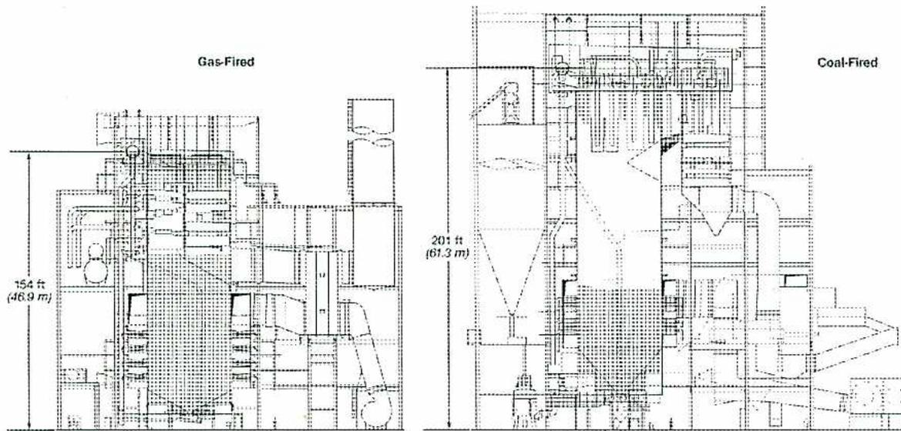
The figure shows two detailed cross-sectional diagrams of industrial boilers. The left diagram, labeled 'Gas-Fired', shows a relatively compact boiler structure with a height dimension of 154 ft (46.9 m). The right diagram, labeled 'Coal-Fired', shows a taller and more complex boiler structure with a height dimension of 201 ft (61.3 m). The coal-fired boiler includes additional components at the bottom for ash removal and more complex piping and structural elements throughout.
Figure 2
Size Comparison of Gas-Fired and Coal-Fired Boilers
Explain the principles of natural water circulation in a steam generator.
Positive circulation of the boiler water is critical to successful operation. Circulation improves thermal efficiency and provides cooling for heated metal surfaces. Poor circulation is a major cause of failure due to overheating.
A shell boiler heated from beneath has little or no circulation, making it unsuitable for rapid steam production. The same boiler with the addition of fire tubes is considerably better, but the most positive circulation is achieved with a water tube boiler.
In a simple water tube circuit, as shown in Fig. 3, due to the positioning of the baffle, the downcomer is unheated and the riser is heated.
![Diagram of a water tube circulation loop. A steam drum at the top contains water and steam. Feedwater enters the drum from the left. A downcomer tube (labeled 'Downcomer (Not Heated)') descends from the bottom of the drum. A furnace tube or riser (labeled 'Furnace Tube or Riser (Heated)') ascends from the bottom of the downcomer, passing through a furnace where heat is applied (labeled 'Heat Input'). The heated water/steam mixture returns to the steam drum. Steam exits from the top of the drum (labeled 'Steam Out'). Arrows indicate the clockwise flow of water: down the downcomer and up the riser.](dbe553cf16dd14073b89a8263a428664_img.jpg)
Figure 3
Water tube Circulation Loop
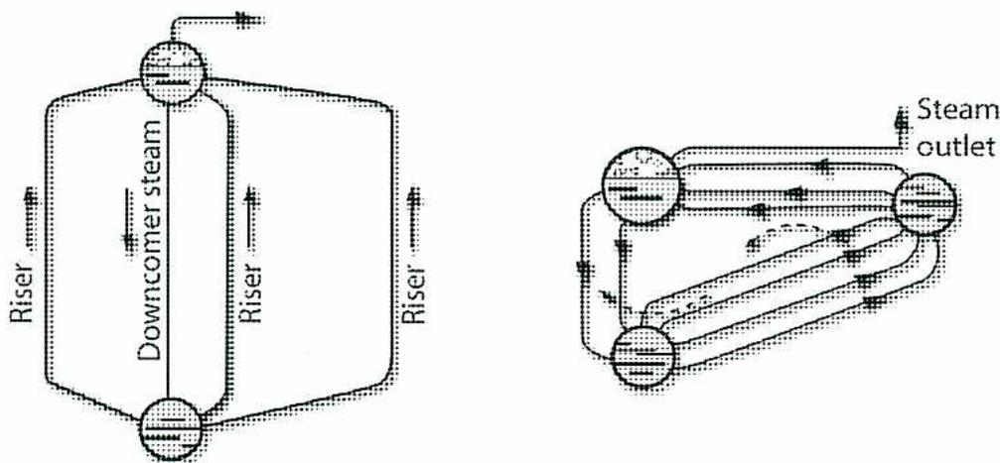
Figure 5
Natural Circulation in Boiler Circuits
In actual natural circulation units the principles of Figs. 4 and 5 apply, but there are usually many parallel riser circuits carrying a steam-water mixture and several larger, cooler downcomers.
Natural circulation in a boiler is dependent upon the difference in densities between steam and water at the boiler operating pressure. This difference in density is the driving force behind the circulation. This force has to overcome the resistance to flow presented by the tubes and headers in the circuit. In general, the force available to produce circulation diminishes with increasing boiler pressures because the densities of steam and water approach each other. This is partially offset by the fact that friction losses tend to decrease as pressure rises.
As a net result, it is possible to design high-pressure steam generators for natural circulation, but as pressure rises circulation factors demand increasingly careful consideration. This is one of the reasons some designers have turned to forced circulation using a pump.
The amount of water circulated in a boiler usually greatly exceeds the amount of steam being generated. If 10 kg of steam-water mixture is circulated for each kg of steam generated, the circulation ratio is 10 to 1.
The percentage of steam by mass in the steam water mixture at the top of a riser tube where heating ceases is called top dryness . It varies with design but normally runs from about 5% to 20%. If the percentage of steam in the mixture becomes excessive, a condition is reached in which a film of steam exists at the inner surfaces of the boiler tubes. This condition is acceptable in superheaters, but not in wall tubes where it is more likely to be stagnant. Furthermore, these tubes are exposed to higher temperature radiant heat and the steam will not cool the tube metal as much as the steam-water mixture will.
Explain why forced circulation is used in a steam generator and how it is attained. Explain the design, placement, and installation considerations for water walls, superheaters, desuperheaters, reheaters, economizers, and air heaters.
In a forced circulation boiler the flow through the tubes is produced by a pump or pumps, rather than by natural circulation. Forced circulation is necessary for boilers operating at and above the critical pressure and is preferred by some designers for boilers operating above 14 000 kPa.
With a forced circulation boiler, a positive and controlled circulation in the proper direction is assured at all boiler loads. Due to this positive flow, small diameter tubes can be used with the resultant benefits of lower cost, less mass and thinner tube walls with reduced thermal stresses. Heat transfer rates are also improved by using smaller tubes.
Another advantage is that the layout of the boiler components is more flexible and there is no need for a high head to produce circulation. Arranging the components more horizontally can reduce the height of the unit. The drum does not have to be at the top of the unit. This flexibility allows the heating surfaces to be arranged with less baffling and fewer gas passes, resulting in lower fan power requirements.
Forced circulation allows the boiler to be started up more quickly and enables it to adjust to load changes more rapidly. One of the main disadvantages of a forced circulation unit is the amount of power required for the pump or pumps. Forced circulation boilers can be divided into two general classes: controlled circulation or recirculating boilers and once-through boilers.
The main feature of a controlled circulation boiler is a recirculating pump, which is used to provide circulation. The basic components of this type of boiler are shown schematically in Fig. 6. Water (from the steam drum) flows to the circulating pump through downcomers. From here it is pumped to an inlet header and distributed to the steam generating tubes. Orifices in the inlet header control the amount of water fed to each steam generating circuit. The steam-water mixture produced in the steam generating tubes is discharged into the steam drum and, by means of separators; the steam is removed from the mixture.
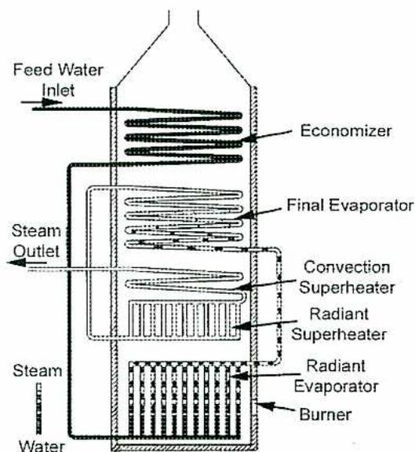
The diagram illustrates the internal components and flow of a once-through boiler. At the top left, 'Feed Water Inlet' enters the 'Economizer' section. The water then flows down through the 'Final Evaporator' section. From there, it passes through the 'Convection Superheater' and 'Radiant Superheater' sections. The 'Radiant Evaporator' section is located at the bottom of the furnace, where the 'Burner' is situated. The 'Steam Outlet' is shown on the left side, exiting the 'Convection Superheater' section. A 'Steam' and 'Water' mixture is shown entering the 'Radiant Evaporator' section from the bottom.
Figure 7
Once-through Boiler Arrangement
The arrangement of a once-through boiler is shown in Fig. 7. The feedwater is heated, evaporated, and superheated in one passage through the unit. The feed pump supplies water to the economizer inlet. After passing through the economizer, the heated water flows to the furnace wall tubes in the radiant zone. Approximately 85% of the water is evaporated in this section, and then the steam-water mixture passes to the final evaporator section where it is completely converted to steam.
The final evaporator section is located in a zone of lower flue gas temperature. Any impurities in the water are deposited here. These deposits can be flushed out during periodic shutdowns. The steam, leaving the final evaporator section, then flows to a radiant superheater section, and finally through a convection superheater section to the steam outlet. The once-through boiler has the following advantages:
The disadvantages of the once-through boiler include the following:
The next step was the use of wide-spaced water tubes on the inside of the brick walls. These tubes, through which the boiler water was circulating, provided some shielding or cooling for the brickwork. As furnace ratings continued to increase, the tubes had to be spaced closer and closer together until the completely water-cooled wall was in use.
![Figure 8: Boiler Wall Construction. The figure consists of six sub-diagrams labeled (a) through (f). (a) shows four circular tubes in a row, tangent to each other, with a stippled rectangular block on top. (b) shows three circular tubes in a row, tangent to each other, with a stippled rectangular block on top. (c) shows three circular tubes in a row, tangent to each other, with a stippled rectangular block on top and a horizontal line between the tubes and the block. (d) shows three circular tubes in a row, tangent to each other, with a stippled rectangular block on top and a horizontal line between the tubes and the block. (e) shows three circular tubes in a row, tangent to each other, with a stippled rectangular block on top and a horizontal line between the tubes and the block. (f) shows three circular tubes in a row, tangent to each other, with a hatched rectangular block on top and a horizontal line between the tubes and the block.](5f8af0cfcf796986f40e70571bb950f5_img.jpg)
Figure 8
Boiler Wall Construction
A tube and brick wall used for small (under 30 000 kg/h) oil- and gas-fired units on rear furnace walls is shown in Fig. 8f. The spaced tubes are backed by firebrick or castable refractory. One or two layers of suitable insulation are applied and then a steel casing is installed to form the outside surface. Similar tube spacing is seen in Fig. 8e. In this tube and tile design, the space between the tubes is filled with castable tiles.
A wall suitable for more severe service is illustrated in Fig. 8a. Here, the tubes are side-by-side touching each other (tangent) to form a continuous water-cooled envelope around the furnace. The tubes are backed by plastic refractory or block insulation. The final layer is an outer metal casing.
A flat-stud tube wall appears in Fig. 8c and Fig. 8d. Flat plates or studs are welded to each side of the tube. When the tubes are installed, these studs fill most of the space between the tubes and provide an expanded metal surface. Castable refractory may also be used to protect the tubes on the furnace side as shown in Fig. 8d. This design is used in refuse-fired boilers or fluid bed boilers where corrosion is a factor. Castable refractory or block insulation and a metal casing are added to the outside of the stud wall.
Due to these advantages, membrane wall construction is used extensively in central station units and in industrial boilers.
Fig. 10 illustrates that tube temperature and membrane temperature are practically the same even during the start-up period. This results in the further advantage of reduced expansion stresses.
![Figure 10: Tube and Membrane Temperatures during start-up. The figure includes a schematic diagram of a boiler wall cross-section and a line graph. The schematic shows two tubes with a 'Membrane Thermocouple' at the bridge and a 'Tube Thermocouple' on the tube wall. The graph plots Temperature in °C (y-axis, 24 to 122) against Time From Light Off in Minutes (x-axis, 0 to 100). Two curves, 'Membrane Thermocouple' (solid line) and 'Tube Thermocouple' (dashed line), are nearly perfectly overlaid, showing identical temperature profiles during start-up.](c2b98986bdf45e15707f6b2bd7ade2bd_img.jpg)
| Time From Light Off - Minutes | Temperature °C |
|---|---|
| 0 | 38 |
| 10 | 40 |
| 20 | 45 |
| 30 | 55 |
| 40 | 65 |
| 50 | 75 |
| 60 | 85 |
| 70 | 95 |
| 80 | 105 |
| 90 | 115 |
| 100 | 122 |
Figure 10
Tube and Membrane Temperatures during start-up
Comparative masses for typical wall types for 7240 kPa design pressure are as follows:
The purpose of a superheater is to increase the temperature of the steam that has been generated in the boiler. This steam leaves the drum at saturated temperature with a dryness fraction over 90%. As it passes through the superheater, the heat absorbed is
The location of the superheater within the boiler may be arranged to receive all the heat by convection, or it may be placed to receive the majority of the heat by direct radiation, or it may be located to receive the heat by a combination of radiation and convection.
The manner of heat transfer (convection, radiation, or a combination of the two) affects the operating characteristics of the superheater regarding variations of steam temperature with changing loads. The convection superheater exhibits rising steam temperature with increased load due to increased gas temperature and increased gas flow. The radiant superheater shows decreasing steam temperature with increased load since the radiation absorption rate does not increase in proportion to the steam flow through the superheater.
If the superheater is located to receive heat by radiation and convection, its outlet steam temperature will be nearly constant over a wide range of load. The same result is obtained if a radiant superheater is connected in series with a convection superheater.
Fig. 13 shows the typical performance characteristics of radiant, convection, and combination superheaters.
![Figure 13: Superheater Characteristics. The figure consists of two parts. On the left is a schematic diagram of a boiler furnace showing the placement of superheater coils. A 'Radiant SHTR' (superheater) is located in the furnace area, while a 'CONV SH' (convection superheater) is located in the boiler's convection pass. On the right is a graph plotting 'Temperature' on the y-axis against '% Load' (0 to 100) on the x-axis. Three curves are shown: 'Radiant and Convection in Series' which remains relatively flat; 'Convection' which rises with load; and 'Radiant' which falls with load.](fe753d01ad5fe6cf150018c958173c6d_img.jpg)
| % Load | Radiant and Convection in Series (Temp) | Convection (Temp) | Radiant (Temp) |
|---|---|---|---|
| 0 | Low | Low | High |
| 50 | Medium-High | Medium | Medium-Low |
| 100 | High | High | Low |
Figure 13
Superheater Characteristics
Superheaters may be drainable or non-drainable. The usual type of construction (pendant type) has the coils or loops hanging vertically downward with the inlet and outlet headers at the upper ends of the loops. This type cannot be drained of the condensate that collects when the boiler is shut down. Another type of construction is the horizontal superheater. This type may or may not be drainable, depending upon how the coils are arranged. A completely drainable type of superheater has tubes looping upwards from the headers. In this case, only one loop per element can be used, making construction expensive
Radiant superheaters may be made in the form of non-drainable panels that hang in the furnace where they are exposed to radiant heat from the fire. Another type is a wall located just within the furnace water wall. This type can be arranged to be drainable. A
The drum type attemperator makes use of loop tubes installed within one of the boiler drums and surrounded by boiler water. Regulating the amount of superheated steam that passes through these loop tubes controls steam temperature.
The condenser type and the shell type have a limited range of control. The shell type is costly and difficult to inspect. The drum type is limited in capacity and takes up a good deal of space within the boiler drum.
The direct contact attemperator, which is also referred to as the spray type desuperheater, introduces feedwater into the superheated steam through a spray nozzle. The water spray vaporizes, mixes with, and cools the superheated steam.
Fig. 14 illustrates the arrangement of spray nozzle, venturi, and thermal sleeve.
The spray nozzle is located at the throat of a venturi section which causes increased steam velocity and thus increases the vaporizing and mixing action. Incorporated with the venturi section is a thermal sleeve, located downstream from the spray nozzle. This protects the high temperature piping from thermal shock resulting from water droplets striking the hot surface.
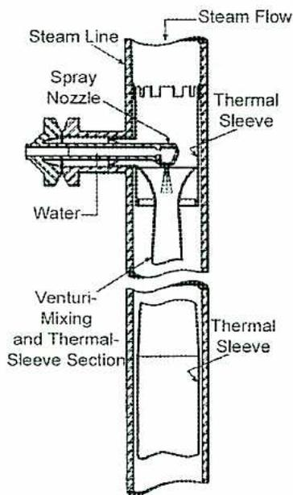
The diagram shows a cross-sectional view of a spray desuperheater. A horizontal 'Steam Line' contains 'Steam Flow' moving from left to right. A 'Spray Nozzle' is positioned at the throat of a 'Venturi-Mixing and Thermal-Sleeve Section'. 'Water' is injected through the spray nozzle into the steam. The venturi section narrows at the throat and then widens. A 'Thermal Sleeve' is located within the venturi section, downstream of the spray nozzle. The diagram is split into two parts: the upper part shows the spray nozzle and the beginning of the venturi section, while the lower part shows the continuation of the venturi section and the thermal sleeve.
Figure 14
Spray Desuperheater
(Babcock & Wilcox)
The spray desuperheater is generally located between stages of the superheater as shown in Fig. 15. This arrangement ensures that the final stage of the superheater is not subjected to excessive temperatures, as would be the case if the desuperheater was located following the final stage. The risk of carrying water droplets from the superheater to the turbine is reduced.
As far as design and construction are concerned, the reheater is similar to the superheater. Like the superheater, reheaters can be located to receive heat by convection, radiation, or a combination of the two. The location determines the operating characteristics of the reheater. The radiant reheater often forms part of, or is located in the top area of, the furnace. The convection reheater is located in the gas passes downstream from the furnace proper.
Design considerations for reheaters are similar to those for superheaters. However, pressure drop is more critical for reheaters due to the fact that the pressure of the steam entering the reheater is much lower than that of the steam entering the superheater.
Superheaters and reheaters used in boilers operating at high pressures and high temperatures (400°C and above) require the use of high strength high-alloy steel tubing. The high steam pressures require increased tube thickness, which means reduced heat transfer and higher metal temperatures. These higher temperatures cause accelerated corrosion of the outside tube surfaces, particularly when burning fuels containing objectionable impurities.
Fig. 16 shows the arrangement of superheaters and reheaters in a large steam generator. This unit features panel type radiant superheaters located within the furnace proper, and platen type radiant superheaters extending across the exit from the furnace. Convection superheaters are also used, including the pendant type, the horizontal type, and the wall type. The reheater sections consist of the radiant wall type along the furnace front wall, and two sections that are the pendant convection type.
To provide the large surfaces required to absorb heat from the relatively low temperature gases, extended surfaces are frequently used. The extended surfaces can be fins or studs that are attached to the economizer tubes.
Generally, the economizer is arranged for downward flow of gas and upward flow of water. This counter flow arrangement provides the maximum mean temperature difference between gas and water, and also provides a uniform temperature difference in all parts of the economizer. The upward flow of water lessens the risk of water hammer. In the case of a steaming economizer, it allows for generation of some steam in the upper end of the economizer. A steaming economizer generates part of the total steam produced by the boiler. This amount is usually limited to about 20% at full boiler load and less at lower loads.
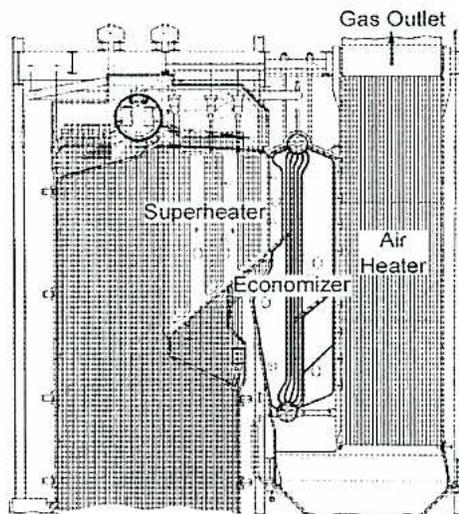
A schematic cross-section of a boiler's internal components. On the left, a large bank of vertical tubes is labeled 'Superheater'. In the center, a smaller bank of vertical tubes is labeled 'Economizer'. On the right, another bank of vertical tubes is labeled 'Air Heater'. At the top right, an arrow points upwards and outwards, labeled 'Gas Outlet'. The entire assembly is housed within a rectangular frame representing the boiler casing.
Figure 17
Integral Economizer (Babcock & Wilcox)
Economizers may be classed by location as integral or separate. The integral type forms an integral part of the boiler. It consists of vertical banks of tubes running between the boiler steam drum and the economizer water drum, or between two economizer water drums. This type is illustrated in Fig. 17.
The separate economizer, which is more common, features rows of horizontal tubes located outside the furnace. After leaving the furnace, the combustion gases are directed over the surface of the economizer tubes and transfer heat to the feedwater flowing inside the tubes. Fig. 18 shows the tube bundle arrangement of a utility boiler economizer. This is a continuous coil design, but because of the large size, it is built in sections.
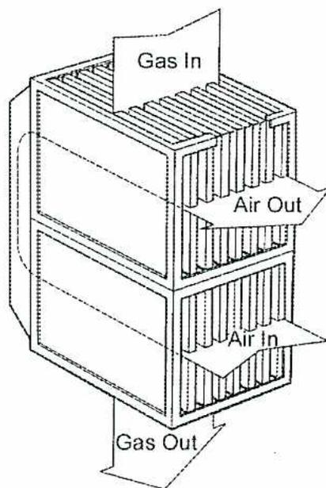
Figure 19
Plate Air Heater
(Courtesy of Babcock and Wilcox)
The tubular air heater consists of a nest of long straight tubes enclosed in a casing. The cold air from the forced draft fan enters at the top and is forced, by means of baffles, to pass over the tubes several times on its way to the air outlet at the bottom. The hot flue gases enter at the bottom and flow upwards through the tubes to the gas outlet at the top. A bypass air duct can be used to bypass a portion of the cold air around the heater in order to maintain the cold end (gas outlet) temperature of the heater above the dew point of the flue gases.
In the regenerative design, heat is transferred to the air from some type of heat absorbing material which has been previously heated by the hot flue gases. Types of regenerative air heaters include the thermal liquid type, and the rotary type.
The thermal liquid type uses a liquid such as diphenyl oxide, which is heated in a heat exchanger located in the flue gas stream. The heated liquid circulates to another heat exchanger located in the air stream and thus heats the air. This type is not commonly used in power plants.
The rotary type is the air heater most commonly used for heating boiler combustion air. This design features a rotor made of baskets containing thin sheets or plates of corrugated metal which form the heat transfer medium. The rotor revolves slowly (2 or 3 rev/min), exposing the corrugated metal plates alternately to the hot gas and the cold air streams. The plates pick up heat from the gas and then give it up to the air. A cutaway view of a rotary air heater showing the gas and airflow arrangement is shown in Fig. 20. A rotary air heater may be oriented vertically or horizontally.
Explain the purpose and placement of screen tubes, division walls, water-cooled stringer tubes in superheaters, and wall-mounted radiant superheaters.
Some boiler designs include steam generation or boiler tubes as the first few rows of tubes in the convection superheater section. These tubes are widely spaced to allow the gases to pass through with little pressure drop. They receive radiant heat from the furnace, as well as convection heat from the gases passing through. These screen tubes protect the inlet tubes of the superheater from the radiant heat of the furnace. They also slightly reduce the temperature of the gases exiting the furnace. The boiler in Fig. 21 incorporates screen tubes between the furnace and the superheater.
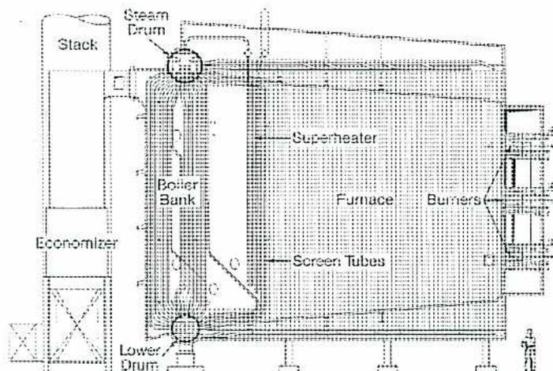
The diagram illustrates a boiler's internal structure. On the left, a vertical stack is shown above an economizer. The main boiler body contains a 'Steam Drum' at the top and a 'Lower Drum' at the bottom. A 'Boiler Bank' of tubes is located on the left side of the central 'Furnace'. To the right of the furnace, 'Burners' are indicated. A 'Superheater' section is positioned above the furnace. 'Screen Tubes' are shown as a series of tubes located between the furnace and the superheater, acting as a protective barrier. The entire assembly is supported by a base structure.
Figure 21
Screen Tubes Between Furnace and Superheater
Water-cooled division walls are used to separate areas of steam generators. For example, the convection section of a steam generator is separated from the radiant section of the furnace by a division wall. This wall is part of the boiler circuit containing the steam-water mixture. Division walls are usually made of airtight all-welded membrane construction. Division walls have also been made using tangent tube construction. In tangent construction, the tubes touch each and can be almost airtight if they are in good condition.
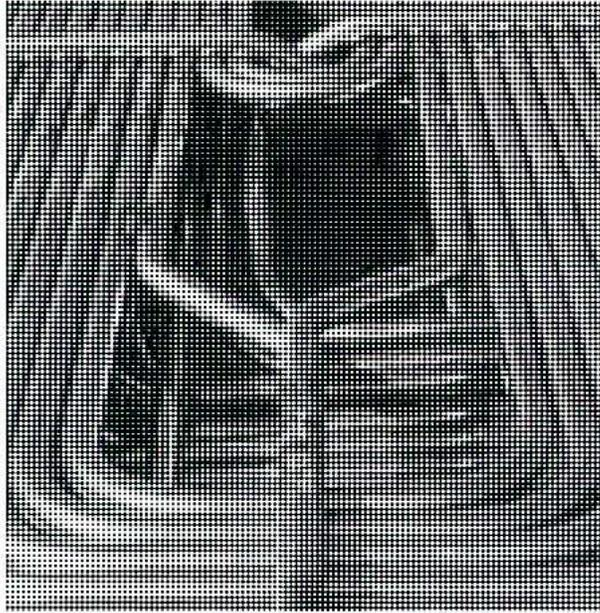
Figure 23
Steam-Cooled Spacers
The steam-cooled tubes shown Fig. 23 are bent around the main tube bundles forming side-to-side spacers and wraparound guides. Fig. 24 shows stringer tubes connecting an economizer to its outlet headers. The tubes help support the economizer tubes. Similar arrangements are used in superheaters to provide support to the parts of the tube bundle between the side supports.
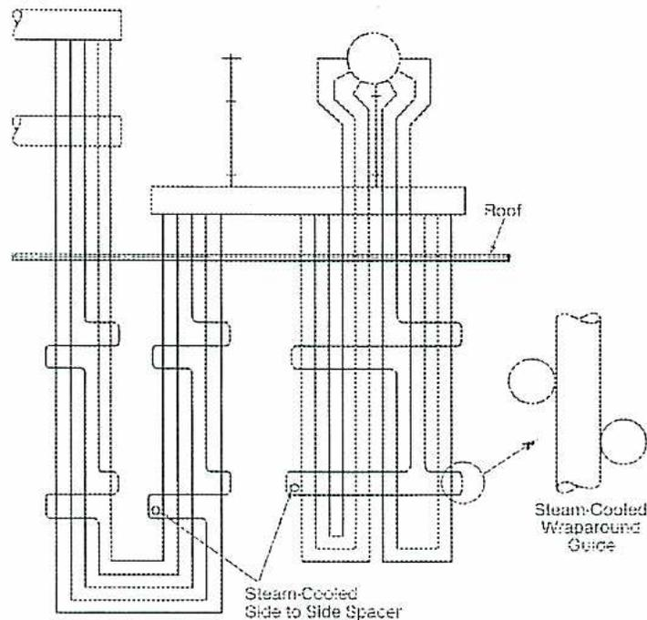
Figure 24
Guides and Stringer Tubes
Describe top and bottom support systems for a steam generator.
The bottom-supported boiler in Fig. 25 has concrete drum foundations supporting the bottom drum and bottom headers. The boiler tubes are used to support the top drum. The tubes connecting the two drums are expanded into position, and then the furnace wall panels are erected and welded into place.
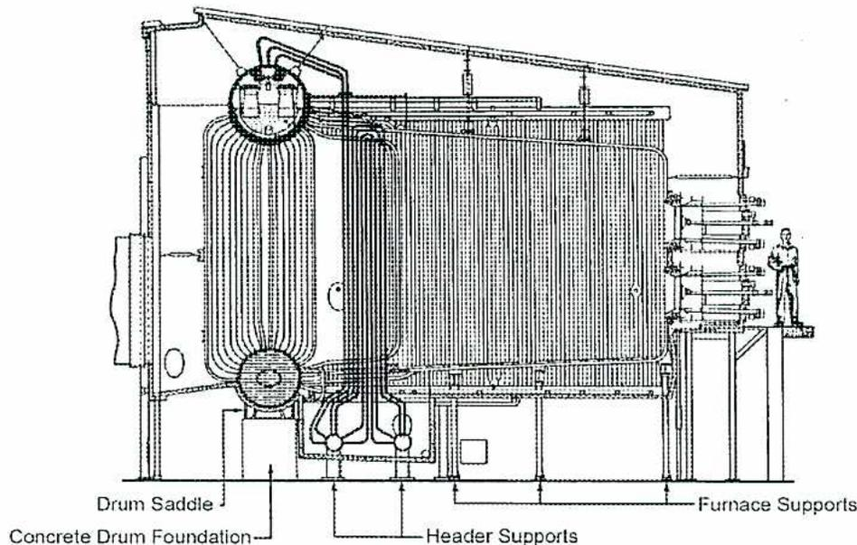
A detailed cross-sectional diagram of a bottom-supported boiler. The boiler consists of a large vertical furnace section with a bundle of tubes on the left. At the top of the tubes is a steam drum, and at the bottom is a water header. The entire assembly is supported by a concrete foundation. Labels with leader lines point to various parts: 'Drum Saddle' points to the support for the top drum; 'Concrete Drum Foundation' points to the base of the boiler; 'Header Supports' point to the supports for the bottom header; and 'Furnace Supports' point to the side supports for the furnace wall. A person is shown standing on a platform to the right of the boiler for scale.
Figure 25
Bottom Supported Boiler
(Courtesy of Babcock and Wilcox)
The bottom drum supports have sliding pads, or feet, which allow for expansion. The walls have lateral supports, which attach to the steelwork. All piping and ductwork must allow for expansion.
The methods of support for each of the major components are:
Describe furnace casing design considerations.
The boiler setting includes everything that forms the outside envelope of the boiler and furnace. The setting includes such things as:
The boiler setting must safely contain all the high temperature gases within the boiler. Leakage and heat loss must be kept to a minimum. The setting must also be durable and not require high levels of maintenance.
Boiler casing refers to the airtight covering forming the outer layer of the boiler. It is the steel sheet or plate attached to pressure parts for supporting, insulating, or forming a gastight enclosure. It includes the outer skin over water walls, windbox and burner ducting, ducting enclosing the economizer, and the air heater. Hot flue gases cannot be allowed to exit pressurized areas. Air leakage cannot be allowed in negative draft areas.
Boiler casings are constructed of sheet or plate and reinforced with stiffeners to withstand the design pressures and temperatures. When the casing is directly attached to the furnace walls, expansion joints must be used since the tubes expand at a different rate than the casing. Some of the major considerations involved when selecting boiler casings are:
Describe the purpose and use of specialized steam generator duct arrangements, including air heater bypass, economizer bypass, and air heater recirculation.
Air heaters are used on many types of steam generators to preheat the combustion air and increase efficiency. Often, flue gas exiting the boiler is used as a heat source. The overall efficiency of the boiler can be increased by 5-10%. Heat sources such as excess steam can also be used. Air heaters are normally located behind the boiler where hot flue gas from the economizer heats the cool air from the forced draft fan.
![Figure 27: Air Heater Bypass Arrangements. The figure contains five schematic diagrams of air heater configurations. 1. Top Left: 'Gas Downflow Air Parallel Flow, Three Pass'. Shows gas entering from the top, exiting at the bottom, and air entering from the right, exiting at the bottom left. 2. Top Middle: 'Gas Upflow Air Counterflow, Three Pass'. Shows gas entering from the bottom, exiting at the top, and air entering from the right, exiting at the bottom left. A bypass duct is shown on the right. 3. Top Right: 'Gas Upflow and Downflow Air Counterflow, Single Pass'. Shows gas entering from the bottom right, exiting at the bottom left, and air entering from the left, exiting at the right. 4. Bottom Left: 'Gas Downflow and Upflow Air Counterflow, Single Pass'. Shows gas entering from the top, exiting at the top right, and air entering from the right, exiting at the left. 5. Bottom Right: 'Gas Upflow Air Counterflow, Two Pass'. Shows gas entering from the bottom, exiting at the top, and air entering from the right, exiting at the bottom left. A bypass duct is shown on the left.](35a7554182eb055209552843f341a1ae_img.jpg)
Figure 27
Air Heater Bypass Arrangements
Describe the methods used to insulate different parts of a steam generator.
Steam generator furnace tubes and other surfaces operate at much higher temperatures than the surrounding air. Hot areas include all steam piping and feedwater piping. In order to reduce the amount of heat lost to the surrounding air from the hot surfaces; these areas are covered with insulation. The insulation not only retains the heat in the boiler and piping, but also prevents the temperature inside the power plant building from becoming uncomfortably high. In addition, insulating hot surfaces prevents injury to personnel who come in contact with the bare surfaces.
Piping that carries substances at a lower temperature than that of the surrounding air should be insulated to prevent sweating of the pipe and consequent dripping and corrosion.
This material is manufactured from molten slag, glass, or rock, and is made into fibres. It comes in the form of mineral wool block or mineral wool blanket .
Calcium silicate is a granular insulation made of lime and silica, reinforced with organic and inorganic fibres, and moulded into rigid forms. Service temperature ranges from 38°C to 650°C. It is flexible and strong. Calcium silicate is water absorbent, but it can be dried out without deterioration. The material is non-combustible and is used primarily on hot piping and enclosure surfaces. Metal jacketing or lagging is field applied over the block.
Steam drums, mud drums, and headers are also insulated where they come in contact with the atmosphere. A thick layer of block insulation (10-15 cm) is usually used. It is held in place by anchors that have been installed during drum manufacture. A layer of tin or lagging is applied over the block insulation and is held in place by banding material. Caulking is used to fill gaps around openings such as nozzles for vents or safety valves.
Any portions of the drums or headers exposed to direct radiant or convection heat from the furnace are protected by refractory. The refractory is held in place by stainless steel anchors attached to the drum or header. A light-gauge metal lagging is used as an outer covering. The lagging can be made waterproof if the unit is not enclosed and is exposed to the elements.
Note: Insulation should not cover vessel nameplates or registration markings.
Piping insulation is specified according to the diameter and the temperature of the piping.
Block insulation is manufactured for all standard sizes of piping. Block insulation is applied and wrapped with an aluminum or stainless steel cladding. Banding is used to keep the insulation firmly wrapped. Joints are caulked to ensure the insulation is waterproof. The material used for insulating piping should have the following characteristics:
Block insulation may be applied in two layers. The first layer withstands the high temperature of the pipe, and the second layer has a higher insulation value. The following list indicates the general application of various piping insulations for different temperature ranges:
List the steps to construct a steam generator.
Although boilers operate at pressures as high as 35 000 kPa and at temperatures in excess of 550°C, they have a life expectancy of 20 years or more. In order to achieve this 20-year service period, the proper materials and methods must be used during fabrication. In addition, proper procedures must be followed during the erection of the boiler whether it is a field-erected or a shop-assembled unit.
The boiler drum is fabricated from plate of the desired material, usually some type of carbon steel or low alloy steel. Depending upon the desired service conditions and the drum diameter, these plates may be up to 25 cm thick.
Usually, the plate is bent to the required shape while hot. In some cases, it is bent while cold. The method used depends upon the plate material, the thickness, and the desired radius. The plate may be bent or rolled to the full circumference, or it may be formed into half cylindrical sections that are subsequently welded together.
Drum heads are fabricated by hot-pressing plates in dies of the proper shape and dimensions, and then they are machined for the circumferential weld grooves. Circumferential welds are used to join the heads to the drum or shell, and also to join cylindrical drum sections together to form a longer drum.
After welding the longitudinal and circumferential seams, nozzle openings are cut in the drum and the nozzles are welded into place. These nozzles include: safety valves, steam outlets, water column connections, and downcomers. Upon completion of all welding, the drum is heat-treated to stress relieve the welds. This is done in a furnace which is large enough to accommodate the entire drum, and in which heat is maintained under controlled conditions.
require massive foundation piers. Boiler foundations are usually designed and installed to specifications by the building contractor from plans supplied by the boiler manufacturer.
Large power station boilers require extensive supporting steelwork. This supporting structure must be able to withstand the mass of the boiler and other related equipment, plus wind loads and earthquake forces if plant location makes this necessary. In addition, the structure must support the boiler and allow free expansion of all parts. Large boilers are top-supported by means of hangers extending from the structural steel to the various component parts of the boiler. This allows the boiler to expand downward from the main supports at the top. As well as supporting the boiler drum and other pressure parts, the structural steel must also support auxiliary equipment and ductwork. In addition, the structure must provide platforms and walkways necessary for operation and maintenance of the unit.
The boiler structural steelwork is normally integrated with the steelwork of the building housing the boiler. Platforms and walkways provide access from the various floors in the plant.
The steam drum can be raised into position at the top of the boiler once the main girder steel has been erected. The drum is hung below the main girder steel by huge U-bolts that encircle the drum. Fig. 29 shows a 250 tonne drum, being lifted at an angle to clear steelwork obstacles, as it is being raised to its final position. The steam drum is often raised inside the furnace cavity.
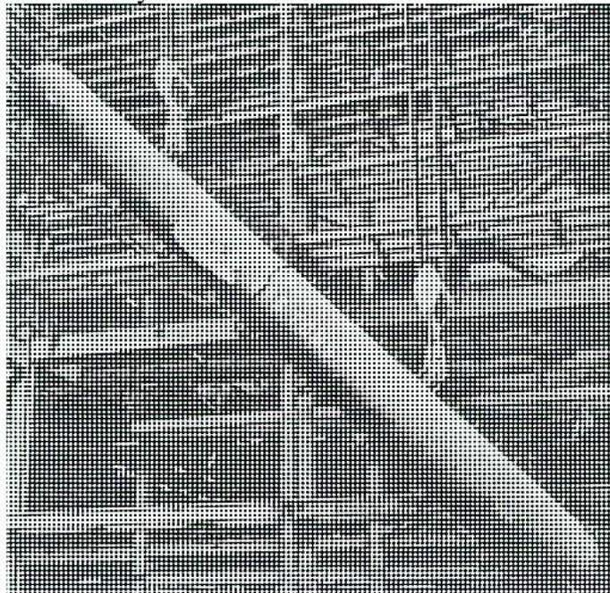
Figure 29
Lifting A Boiler Drum (Foster Wheeler)
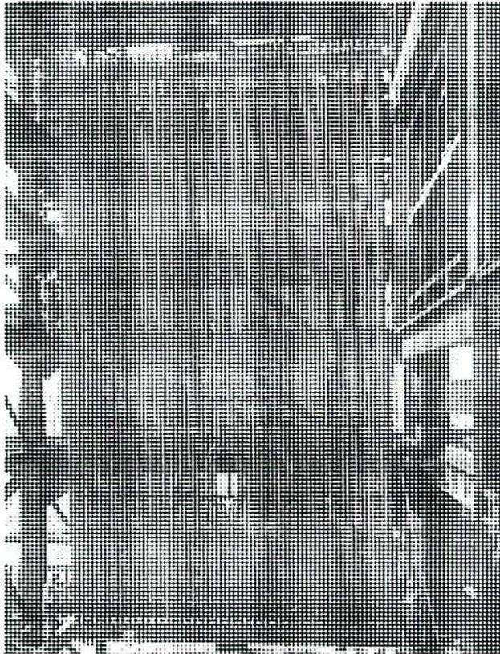
Figure 30
Installation of Water wall Panel
When the main pressure parts of a steam generator have been put in place, work commences on the installation of auxiliary equipment. Auxiliary equipment associated with a steam generator includes:
The welding quality of pressure parts should be inspected to assure the manufacturer that all workmanship meets required standards, and to assure the authorized inspectors that all welding complies with the ASME Code.
Metal casing may be supported by the wall structure itself, or it may be supported by external steelwork. It may be classified as airtight , non-tight , or pressure . Airtight casing has to be tight enough to keep air leakage to a minimum. It is usually constructed of flanged panels that are bolted or welded together. Non-tight casing protects the insulation and improves the appearance of the boiler. Air leakage is prevented by carefully arranging and installing the insulation. Pressure casing is used for pressurized furnaces and must be completely airtight against the pressure of the furnace. Therefore, this type of casing is completely welded.
A system of metal ducts is used to convey the combustion air to the furnace, and to convey the combustion gas from the furnace to the stack. These ducts are supported by the structural steelwork. All ductwork must be installed before the boiler auxiliaries, such as fans, can be run. Prior to applying the insulation, positive air pressure is used to check the ductwork for leaks.
Ductwork in a central station boiler includes such items as:
After the boiler has been completely erected, a thorough inspection of all parts must be carried out before the boiler can be filled with water and fired. All trash and debris must be removed from the drum. Tubes should be closely checked for obstructions. Drum internals must be checked for correct position and tightness of fastenings. The chemical feedline, continuous blowdown line, and boiler feedline are located within the drum steam. These internal pipes must be inspected to ensure they are clear from obstructions and blockages. In addition, all drum connections must be checked for obstructions.
A thorough internal inspection of the furnace must be carried out. All timbers, scaffolding parts, cardboard, and other debris must be removed. Flue gas baffles, furnace inspection openings, flue gas sampling points, and pressure and temperature instruments, must be examined for proper location and installation. Soot blower movements are checked to ensure proper clearance, and to avoid the possibility of direct steam impingement on tubes or baffles.